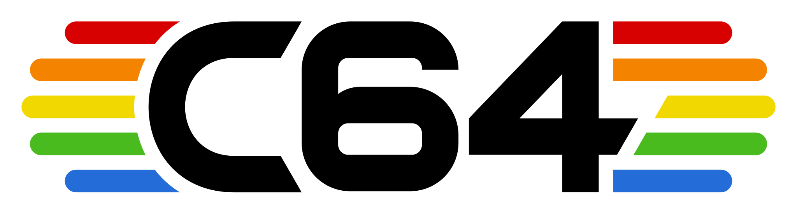

PROJECT 64
A set of tools, skills, and an MCP that let AI agents write and debug Commodore 64 software — BASIC and 6502 assembly — on the VICE emulator.
── WHAT IS IT ──
The Commodore 64 is the best-selling home computer ever made — where a generation learned to program, and to play. Project 64 brings it back — not just for nostalgia, but as a place an AI agent can actually build, run, and debug real 8-bit software end to end: BASIC, 6502 assembly, sprites, and three-voice SID sound.
It drives the open-source VICE emulator through a clean command line (every command speaks JSON) and an MCP server, and includes the machine knowledge — skills, memory maps, a tested cookbook — that an agent needs to get it right.
── CAPABILITIES ──
Boot a C64 (NTSC or PAL) headless, in warp, with a disk attached.
Assemble 6502 with cc65 or tokenize BASIC; load and RUN in one step.
Symbolic breakpoints and watchpoints, single-step, memory and register inspection.
Block until screen text appears, memory hits a value, or a checkpoint fires.
Create images, copy files in and out, attach and boot — via c1541.
Identify the ROM set and disassemble live memory with symbol annotations.
Boot, load, feed input, assert on screen / memory / registers. CI-ready.
~30 MCP tools plus skills, memory maps, and a live-tested recipe cookbook — sprites and SID included.
── QUICK START ──
Needs Python 3.11+, VICE 3.5+, and the cc65 suite.
# macOS
brew install vice cc65
pip install -e .
Then drive an emulated C64:
c64 session start # boot a C64 (NTSC) c64 run game.s # assemble + load + RUN c64 screen # read the screen as text c64 break add start # symbolic breakpoint c64 wait --break # block until it fires c64 step 5 && c64 reg # single-step, inspect
Every command takes --json — the interface an agent uses.
── USE WITH AN AI AGENT ──
Any agent with a shell needs zero setup — the CLI plus --json
is the whole integration. For MCP-native clients, c64-tools-mcp exposes
the same operations. Pick your agent:
- Install the skills:
mkdir -p .claude/skills && cp -R skills/* .claude/skills/ - Optional MCP:
claude mcp add c64-tools -- c64-tools-mcp - Ask for what you want — e.g. paste a prompt from
demos/.
No CLAUDE.md edits needed — installed skills load on demand.
- Add the MCP:
codex mcp add c64-tools -- c64-tools-mcp - In
AGENTS.md: “For C64 work, first read skills/c64-development/SKILL.md and docs/cli.md.” - Paste a prompt from
demos/.
- Add the standard
mcpServersblock to.cursor/mcp.json. - Add a rule (
.cursor/rules/c64.mdc) pointing at skills/c64-development/SKILL.md. - Paste a prompt from
demos/.
- Add the
mcpServersblock to.gemini/settings.json. - Add the read-the-skill one-liner to
GEMINI.md. - Paste a prompt from
demos/.
- MCP store → Manage MCP Servers → View raw config → add the
mcpServersblock. - Add the read-the-skill one-liner to
AGENTS.md. - Paste a prompt from
demos/.
── DEMOS: TRY IT! ──
Ready-to-paste prompts, graded from a first BASIC program up to an arcade-faithful Invaders in assembly with sprites and three-voice SID sound, and a bitmap-graphics demo painted to the 1812 Overture. Each gets validated by handing it to a real agent and confirming the result — the first is dogfooded; the rest of the C64 ports are freshly cut and awaiting their runs.
| # | Demo | Language | Status |
|---|---|---|---|
| 01 | Guess the number | BASIC | [x] dogfooded |
| 02 | Bouncing ball (sprite) | BASIC | [ ] awaiting dogfood |
| 03 | Sieve benchmark | BASIC + asm | [ ] awaiting dogfood |
| 04 | Snake | 6502 assembly | [ ] awaiting dogfood |
| 05 | Debug hunt | BASIC + debugger | [ ] awaiting dogfood |
| 06 | Invaders | 6502 assembly | [ ] awaiting dogfood |
| 07 | 1812 (bitmap + SID) | 6502 assembly | [ ] awaiting dogfood |